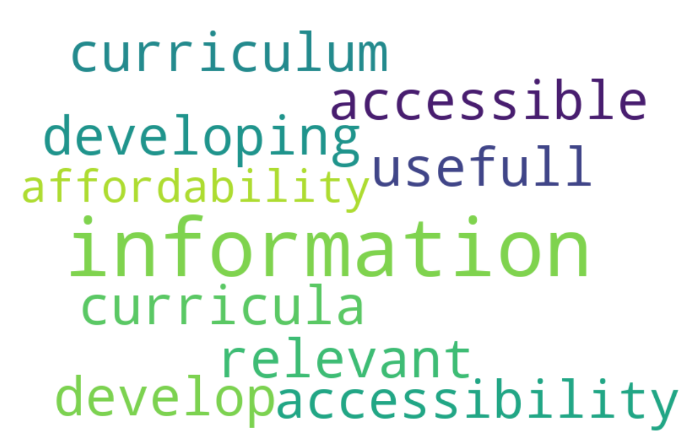

Requirement already satisfied: pandas in /opt/anaconda3/lib/python3.11/site-packages (2.1.4)
Requirement already satisfied: numpy<2,>=1.23.2 in /opt/anaconda3/lib/python3.11/site-packages (from pandas) (1.26.4)
Requirement already satisfied: python-dateutil>=2.8.2 in /opt/anaconda3/lib/python3.11/site-packages (from pandas) (2.8.2)
Requirement already satisfied: pytz>=2020.1 in /opt/anaconda3/lib/python3.11/site-packages (from pandas) (2023.3.post1)
Requirement already satisfied: tzdata>=2022.1 in /opt/anaconda3/lib/python3.11/site-packages (from pandas) (2023.3)
Requirement already satisfied: six>=1.5 in /opt/anaconda3/lib/python3.11/site-packages (from python-dateutil>=2.8.2->pandas) (1.16.0)Text Mining Basics with Python
Lab 1: Code-Along
Agenda
Setting Up Python Environment
- Install and Import Library
Importing and Subsetting Data
- Read Data
- Subset Columns
- Rename Columns
- Subset Rows
Preprocessing Data
- Tokenize
- Remove Stop Words
- Lemmatize
Exploring Data
- Word Counts
- Word Frequencies
- Term Frequency-Inverse Document Frequency
Visualizing Data
- Word Clouds
- Bar Chart
- Small Multiples
Setting Up Python Environment
Install and Import Library
What is a library?
A library is a collection of pre-written code that adds functionality to Python, ensuring common functionalities do not need to be rewritten from scratch.
How to install and import library?
pip is Python’s library installer and manager.
pip install <library_name>: Install libraries using this command in the terminal.!pip install <library_name>: In Quarto Markdown (.qmd) files, add an exclamation mark (!) beforepipto install libraries.import <library_name>: Load libraries into the Python environment after installation.import <library_name> as <alias>: Use aliases for commonly used libraries with long names.
Note that < > is not part of the command, it is just used to highlight the part that you need to adapt to your data.
Necessary Libraries for Text Mining
pandas: a library for data manipulation and analysis.
nltk: a ibrary for symbolic and statistical natural language processing for English written in the Python programming language.
matplotlib: a library for creating static, animated, and interactive visualizations in Python.
seaborn: a data visualization library based on matplotlib that provides a high-level interface for drawing attractive and informative statistical graphics.
scikit-learn: a library that implements a range of machine learning, pre-processing, cross-validation, and visualization algorithms using a unified interface.
gensim: a library designed for natural language processing (NLP) tasks such as topic modeling, document indexing, and similarity retrieval, particularly with large text corpora.
Your Turn
Install and import all the necessary libraries. Notice that import matplotlib.pyplot and use plt as its alias, and import seaborn and use sns as its alias.
Requirement already satisfied: nltk in /opt/anaconda3/lib/python3.11/site-packages (3.8.1)
Requirement already satisfied: matplotlib in /opt/anaconda3/lib/python3.11/site-packages (3.8.0)
Requirement already satisfied: seaborn in /opt/anaconda3/lib/python3.11/site-packages (0.12.2)
Requirement already satisfied: scikit-learn in /opt/anaconda3/lib/python3.11/site-packages (1.2.2)
Requirement already satisfied: click in /opt/anaconda3/lib/python3.11/site-packages (from nltk) (8.1.7)
Requirement already satisfied: joblib in /opt/anaconda3/lib/python3.11/site-packages (from nltk) (1.2.0)
Requirement already satisfied: regex>=2021.8.3 in /opt/anaconda3/lib/python3.11/site-packages (from nltk) (2023.10.3)
Requirement already satisfied: tqdm in /opt/anaconda3/lib/python3.11/site-packages (from nltk) (4.65.0)
Requirement already satisfied: contourpy>=1.0.1 in /opt/anaconda3/lib/python3.11/site-packages (from matplotlib) (1.2.0)
Requirement already satisfied: cycler>=0.10 in /opt/anaconda3/lib/python3.11/site-packages (from matplotlib) (0.11.0)
Requirement already satisfied: fonttools>=4.22.0 in /opt/anaconda3/lib/python3.11/site-packages (from matplotlib) (4.25.0)
Requirement already satisfied: kiwisolver>=1.0.1 in /opt/anaconda3/lib/python3.11/site-packages (from matplotlib) (1.4.4)
Requirement already satisfied: numpy<2,>=1.21 in /opt/anaconda3/lib/python3.11/site-packages (from matplotlib) (1.26.4)
Requirement already satisfied: packaging>=20.0 in /opt/anaconda3/lib/python3.11/site-packages (from matplotlib) (23.1)
Requirement already satisfied: pillow>=6.2.0 in /opt/anaconda3/lib/python3.11/site-packages (from matplotlib) (10.2.0)
Requirement already satisfied: pyparsing>=2.3.1 in /opt/anaconda3/lib/python3.11/site-packages (from matplotlib) (3.0.9)
Requirement already satisfied: python-dateutil>=2.7 in /opt/anaconda3/lib/python3.11/site-packages (from matplotlib) (2.8.2)
Requirement already satisfied: pandas>=0.25 in /opt/anaconda3/lib/python3.11/site-packages (from seaborn) (2.1.4)
Requirement already satisfied: scipy>=1.3.2 in /opt/anaconda3/lib/python3.11/site-packages (from scikit-learn) (1.11.4)
Requirement already satisfied: threadpoolctl>=2.0.0 in /opt/anaconda3/lib/python3.11/site-packages (from scikit-learn) (2.2.0)
Requirement already satisfied: pytz>=2020.1 in /opt/anaconda3/lib/python3.11/site-packages (from pandas>=0.25->seaborn) (2023.3.post1)
Requirement already satisfied: tzdata>=2022.1 in /opt/anaconda3/lib/python3.11/site-packages (from pandas>=0.25->seaborn) (2023.3)
Requirement already satisfied: six>=1.5 in /opt/anaconda3/lib/python3.11/site-packages (from python-dateutil>=2.7->matplotlib) (1.16.0)Importing and Subsetting Data
Read Data
How to read data into Python environment?
| RecordedDate | ResponseId | Role | Q14 | Q16 | Resource | Resource_8_TEXT | Resource_9_TEXT | Resource_10_TEXT | Resource.1 | Resource_10_TEXT.1 | Q16.1 | Q16_9_TEXT | Q19 | Q20 | Q21 | Q26 | Q37 | Q8 | |
|---|---|---|---|---|---|---|---|---|---|---|---|---|---|---|---|---|---|---|---|
| 0 | Recorded Date | Response ID | What is your role within your school district ... | Please select the school level(s) you work wit... | Which content area(s) do you specialize in? (... | Please indicate the online professional develo... | Please indicate the online professional develo... | Please indicate the online professional develo... | Please indicate the online professional develo... | What was the primary focus of the webinar you ... | What was the primary focus of the webinar you ... | Which primary content area(s) did the webinar ... | Which primary content area(s) did the webinar ... | Please specify the online learning module you ... | How are you using this resource? | What was the most beneficial/valuable aspect o... | What recommendations do you have for improving... | What recommendations do you have for making th... | Which of the following best describe(s) how yo... |
| 1 | {"ImportId":"recordedDate","timeZone":"America... | {"ImportId":"_recordId"} | {"ImportId":"QID2"} | {"ImportId":"QID15"} | {"ImportId":"QID16"} | {"ImportId":"QID3"} | {"ImportId":"QID3_8_TEXT"} | {"ImportId":"QID3_9_TEXT"} | {"ImportId":"QID3_10_TEXT"} | {"ImportId":"QID29"} | {"ImportId":"QID29_10_TEXT"} | {"ImportId":"QID31"} | {"ImportId":"QID31_9_TEXT"} | {"ImportId":"QID19"} | {"ImportId":"QID20_TEXT"} | {"ImportId":"QID5_TEXT"} | {"ImportId":"QID26_TEXT"} | {"ImportId":"QID37_TEXT"} | {"ImportId":"QID8"} |
| 2 | 3/14/12 12:41 | R_6fKCyERAM07T4xK | Central Office Staff (e.g. Superintendents, Te... | K-12 | Elementary Education/Generalist,English Langua... | Summer Institute/RESA PowerPoint Presentations | NaN | NaN | NaN | NaN | NaN | NaN | NaN | NaN | NaN | NaN | NaN | NaN | NaN |
| 3 | 3/14/12 13:31 | R_09rHleucd8tHHU0 | Central Office Staff (e.g. Superintendents, Te... | Elementary,Middle School | Elementary Education/Generalist,English Langua... | Online Learning Module (e.g. Call for Change, ... | NaN | NaN | NaN | NaN | NaN | NaN | NaN | Designing Local Curricula | Collecting district feedback | Global view | Differentiated for staff | NaN | With Colleagues: Discussion with a PLC |
| 4 | 3/14/12 14:51 | R_1BlKt2FBsmH9fU0 | School Support Staff (e.g. Counselors, Technol... | High School | Not Applicable | Online Learning Module (e.g. Call for Change, ... | NaN | NaN | NaN | NaN | NaN | NaN | NaN | NC FALCON | NaN | NaN | NaN | NaN | With Colleagues: Discussion with a PLC |
| ... | ... | ... | ... | ... | ... | ... | ... | ... | ... | ... | ... | ... | ... | ... | ... | ... | ... | ... | ... |
| 57049 | 7/2/13 12:32 | R_bpZ2jPQV1BOta2p | NaN | NaN | NaN | NaN | NaN | NaN | NaN | NaN | NaN | NaN | NaN | NaN | NaN | NaN | NaN | NaN | NaN |
| 57050 | 7/2/13 12:32 | R_4SbNuxFI6qv8pQF | Teacher | Elementary,Middle School | Mathematics,Exceptional Children | Online Learning Module (e.g. Call for Change, ... | NaN | NaN | NaN | NaN | NaN | NaN | NaN | Other (Please specify) | NaN | NaN | NaN | NaN | NaN |
| 57051 | 7/2/13 12:32 | R_1TT9rRNolK2xSDP | NaN | NaN | NaN | NaN | NaN | NaN | NaN | NaN | NaN | NaN | NaN | NaN | NaN | NaN | NaN | NaN | NaN |
| 57052 | 7/2/13 12:32 | R_8raUHcIydALnRhH | NaN | NaN | NaN | NaN | NaN | NaN | NaN | NaN | NaN | NaN | NaN | NaN | NaN | NaN | NaN | NaN | NaN |
| 57053 | 7/2/13 12:32 | R_2bs3lzLBdGWjkOx | NaN | NaN | NaN | NaN | NaN | NaN | NaN | NaN | NaN | NaN | NaN | NaN | NaN | NaN | NaN | NaN | NaN |
57054 rows × 19 columns
pd.read_csv(‘<file_path>’): you can use the read_csv() function from pandas to read the csv file into your Python environment.=: you can use the = to assign the data to a DataFrame and give it a name (i.e., opd_survey).
Important Terminology
- DataFrame and Series are two fundamental data structures in pandas.
A Series is a one-dimensional labeled array capable of holding data of any type (integer, string, float, Python objects, etc.).
A DataFrame is a two-dimensional, size-mutable, potentially heterogeneous tabular data structure with labeled axes (rows and columns). It is similar in concept to a spreadsheet or SQL table, but with additional powerful capabilities for data manipulation and analysis.
Read Data
How to read other data file types?
pd.read_excel('<file_path>')pd.read_json('<file_path>')
Your Turn
Read the CSV file called opd_survey_copy within the data folder and create a DataFrame corresponding to its name.
Subset Columns
Why subset columns?
- Focus on relevant data
- Privacy and ethical considerations
How to subset columns?
| Role | Resource | Q21 | |
|---|---|---|---|
| 0 | What is your role within your school district ... | Please indicate the online professional develo... | What was the most beneficial/valuable aspect o... |
| 1 | {"ImportId":"QID2"} | {"ImportId":"QID3"} | {"ImportId":"QID5_TEXT"} |
| 2 | Central Office Staff (e.g. Superintendents, Te... | Summer Institute/RESA PowerPoint Presentations | NaN |
| 3 | Central Office Staff (e.g. Superintendents, Te... | Online Learning Module (e.g. Call for Change, ... | Global view |
| 4 | School Support Staff (e.g. Counselors, Technol... | Online Learning Module (e.g. Call for Change, ... | NaN |
| ... | ... | ... | ... |
| 57049 | NaN | NaN | NaN |
| 57050 | Teacher | Online Learning Module (e.g. Call for Change, ... | NaN |
| 57051 | NaN | NaN | NaN |
| 57052 | NaN | NaN | NaN |
| 57053 | NaN | NaN | NaN |
57054 rows × 3 columns
df[['<column_name1>', '<column_name2>', ...]]: Select columns by names.df.iloc[:, [<index1>, <index2>, ...]]: Select columns by positional index.df.drop(columns=['<column_name1>', '<column_name2>']): Drop unwanted columns.
Your Turn
Select these three columns Role, Resource, Q21 using the index approach.
Rename Columns
Why rename columns?
- Clarity and readability
- Consistency across datasets
How to rename a column?
| Role | Resource | text | |
|---|---|---|---|
| 0 | What is your role within your school district ... | Please indicate the online professional develo... | What was the most beneficial/valuable aspect o... |
| 1 | {"ImportId":"QID2"} | {"ImportId":"QID3"} | {"ImportId":"QID5_TEXT"} |
| 2 | Central Office Staff (e.g. Superintendents, Te... | Summer Institute/RESA PowerPoint Presentations | NaN |
| 3 | Central Office Staff (e.g. Superintendents, Te... | Online Learning Module (e.g. Call for Change, ... | Global view |
| 4 | School Support Staff (e.g. Counselors, Technol... | Online Learning Module (e.g. Call for Change, ... | NaN |
| ... | ... | ... | ... |
| 57049 | NaN | NaN | NaN |
| 57050 | Teacher | Online Learning Module (e.g. Call for Change, ... | NaN |
| 57051 | NaN | NaN | NaN |
| 57052 | NaN | NaN | NaN |
| 57053 | NaN | NaN | NaN |
57054 rows × 3 columns
df.rename(columns={'<old_name>': '<new_name>'}, inplace=True): Rename columns.df.columns = ['<new_name1>', '<new_name2>', ...]: Directly assign new column names.
Your Turn
Rename the Role as role and Resource as resource.
Subset Rows
Why subset rows?
- Filtering data to meet specific conditions
- Exploratory analysis with small dataset portions
- Preparing data for modeling
How to subset rows?
opd_sliced = opd_renamed.iloc[2:]
opd_teacher = opd_sliced[opd_sliced['Role'] == 'Teacher']
opd_teacher| Role | Resource | text | |
|---|---|---|---|
| 6 | Teacher | Live Webinar | levels ofquestioning and revised blooms |
| 7 | Teacher | Online Learning Module (e.g. Call for Change, ... | None, really. |
| 11 | Teacher | Online Learning Module (e.g. Call for Change, ... | In any of the modules when a teacher is shown ... |
| 12 | Teacher | Online Learning Module (e.g. Call for Change, ... | NaN |
| 13 | Teacher | Online Learning Module (e.g. Call for Change, ... | Understanding the change |
| ... | ... | ... | ... |
| 57038 | Teacher | Online Learning Module (e.g. Call for Change, ... | I can complete this on my own time. |
| 57044 | Teacher | Document, please specify (i.e. Facilitator's G... | To find out the available resources and how to... |
| 57046 | Teacher | Online Learning Module (e.g. Call for Change, ... | accessibility online |
| 57048 | Teacher | Online Learning Module (e.g. Call for Change, ... | The information and the interesting format |
| 57050 | Teacher | Online Learning Module (e.g. Call for Change, ... | NaN |
33067 rows × 3 columns
df.iloc[[<index1>, <index2>, ...]]: Select rows based on integer indices.df[df['<column>'] == <condition>]: Select rows based on conditions.
Your Turn
Subset the first 10 rows of opd_teacher and save it into a new DataFrame called opd_teacher_first10.
Preprocessing Data
Tokenize
What is tokenization and why is it needed?
Tokenization is the process of breaking down a text into smaller units called tokens, which helps in preparing text for further analysis and modelling by providing a structured representation of linguistic units.
Important Terminology
Token: a single, indivisible unit of text that can be considered as a meaningful component for processing
- words, punctuation marks, numbers, and other entities that are treated as discrete elements
Document: a unit of text that is being analyzed or processed as a whole
a single piece of text, such as an email, a news article, a research paper, etc.
a collection of related texts or a segment of a larger corpus
Corpus: a collection of documents
Types of Tokenization
Word Tokenization
Example: “Hello, world!” → [“Hello”, “,”, “world”, “!”]
Sentence Tokenization
Example: “Hello world! How are you?” → [“Hello world!”, “How are you?”]
Subword Tokenization
Example: “tokenization” →[“token”, “ization”]
Character Tokenization
Example: “Hello” → [“H”, “e”, “l”, “l”, “o”]
N-gram Tokenization
Example: “Hello world” with N=2 → [“Hello world”]
How to tokenize?
Tokenization Module from NLTK
work_tokenize
RegexpTokenizer
WhitespaceTokenizer
…
Tokenization Module from Spacy
Tokenization Module from BERT
…
How to choose the right tokenization method?
Text Characteristics
Task Requirements
Performance Considerations
…
RegexpTokenizer
RegexpTokenizer uses regular expressions to specify the pattern for tokens, allowing you to precisely control what constitutes a token. This flexibility is particularly useful when you need to handle specific tokenization requirements, such as ignoring punctuation, extracting specific patterns like hashtags or mentions in social media texts, or working with languages that don’t use whitespace to separate words.
Word Tokenizing a Single Document with RegexpTokenizer
# Import RegexpTokenizer
from nltk.tokenize import RegexpTokenizer
# Define a regex pattern to match words, here the pattern = r'\w+' means alphanumeric sequences
pattern = r'\w+'
# Initiate a RegexpTokenizer
tokenizer = RegexpTokenizer(pattern)
# Example Text
text = "Information is relevant and easily accessable."
# Tokenize the text
tokens = tokenizer.tokenize(text)
#Display the tokens
print(tokens)['Information', 'is', 'relevant', 'and', 'easily', 'accessable']Word Tokenizing Multiple Documents with Apply & Lambda
# Import RegexpTokenizer
from nltk.tokenize import RegexpTokenizer
# Define a regex pattern to match words, here the example pattern = r'\w+' meaning alphanumeric sequences
pattern = r'\w+'
# Initiate a RegexpTokenizer
tokenizer = RegexpTokenizer(pattern)
# Example Corpus
corpus = pd.DataFrame({
'document_id': [1, 2, 3],
'text': [
"Information about how to develop curricula is usefull",
"Information of curriculum developing is relevant and accessible.",
"Information is of accessibility and affordability."
]
})
# Tokenize each document in the 'text' column
corpus['tokens'] = corpus['text'].apply(lambda x: tokenizer.tokenize(x.lower()))
# Display the DataFrame with tokenized documents
print(corpus) document_id text \
0 1 Information about how to develop curricula is ...
1 2 Information of curriculum developing is releva...
2 3 Information is of accessibility and affordabil...
tokens
0 [information, about, how, to, develop, curricu...
1 [information, of, curriculum, developing, is, ...
2 [information, is, of, accessibility, and, affo... Apply
# Tokenize each document in the 'text' column
corpus['tokens'] = corpus['text'].apply(lambda x: tokenizer.tokenize(x.lower()))
# Display the DataFrame with token lists
print(corpus) document_id text \
0 1 Information about how to develop curricula is ...
1 2 Information of curriculum developing is releva...
2 3 Information is of accessibility and affordabil...
tokens
0 [information, about, how, to, develop, curricu...
1 [information, of, curriculum, developing, is, ...
2 [information, is, of, accessibility, and, affo... DataFrame.apply(func, axis=0, raw=False, result_type=None, args=(), **kwds)
func: The function to apply to each column (axis=0) or row (axis=1).
axis: Axis along which the function is applied (0 for columns, 1 for rows).
raw: Whether to pass the data as ndarray (True) or Series (False).
result_type: Defines whether the result should be ‘expand’, ‘reduce’, or ‘broadcast’.
**args, kwds: Additional arguments and keywords to pass to the function.
Lambda
# Tokenize each document in the 'text' column
corpus['tokens'] = corpus['text'].apply(lambda x: tokenizer.tokenize(x.lower()))
# Display the DataFrame with token lists
print(corpus) document_id text \
0 1 Information about how to develop curricula is ...
1 2 Information of curriculum developing is releva...
2 3 Information is of accessibility and affordabil...
tokens
0 [information, about, how, to, develop, curricu...
1 [information, of, curriculum, developing, is, ...
2 [information, is, of, accessibility, and, affo... lambda arguments: expression
- arguments: The parameters that the lambda function accepts.
- expression: A single expression that is evaluated and returned.
Exploding Tokenized Results
# Explode the 'word' column to transform each row into individual words
corpus_exploded = corpus.explode('tokens')
# Display the DataFrame with token into separate rows
print(corpus_exploded) document_id text \
0 1 Information about how to develop curricula is ...
0 1 Information about how to develop curricula is ...
0 1 Information about how to develop curricula is ...
0 1 Information about how to develop curricula is ...
0 1 Information about how to develop curricula is ...
0 1 Information about how to develop curricula is ...
0 1 Information about how to develop curricula is ...
0 1 Information about how to develop curricula is ...
1 2 Information of curriculum developing is releva...
1 2 Information of curriculum developing is releva...
1 2 Information of curriculum developing is releva...
1 2 Information of curriculum developing is releva...
1 2 Information of curriculum developing is releva...
1 2 Information of curriculum developing is releva...
1 2 Information of curriculum developing is releva...
1 2 Information of curriculum developing is releva...
2 3 Information is of accessibility and affordabil...
2 3 Information is of accessibility and affordabil...
2 3 Information is of accessibility and affordabil...
2 3 Information is of accessibility and affordabil...
2 3 Information is of accessibility and affordabil...
2 3 Information is of accessibility and affordabil...
tokens
0 information
0 about
0 how
0 to
0 develop
0 curricula
0 is
0 usefull
1 information
1 of
1 curriculum
1 developing
1 is
1 relevant
1 and
1 accessible
2 information
2 is
2 of
2 accessibility
2 and
2 affordability Your Turn
Tokenize the text column of opd_teacher DataFrame and explode the tokenized results into a word column.
Remove Stop Words
Why remove stop words?
Stop words like “and”, “the”, “is”, “in”, “to” do not carry important meaning, removing them helps reduce the noise of analysis.
How to remove stop words?
# Import stopwords
from nltk.corpus import stopwords
# Download the NLTK data for stop words
nltk.download('stopwords')
# Get a list of English stop words
stop_words = set(stopwords.words('english'))
# Remove stop words from the tokens obtained from tokenization
corpus_clean = corpus_exploded[~corpus_exploded['tokens'].isin(stop_words)]
# Display the DataFrame with exploded tokens and stop words removed
print(corpus_clean) document_id text \
0 1 Information about how to develop curricula is ...
0 1 Information about how to develop curricula is ...
0 1 Information about how to develop curricula is ...
0 1 Information about how to develop curricula is ...
1 2 Information of curriculum developing is releva...
1 2 Information of curriculum developing is releva...
1 2 Information of curriculum developing is releva...
1 2 Information of curriculum developing is releva...
1 2 Information of curriculum developing is releva...
2 3 Information is of accessibility and affordabil...
2 3 Information is of accessibility and affordabil...
2 3 Information is of accessibility and affordabil...
tokens
0 information
0 develop
0 curricula
0 usefull
1 information
1 curriculum
1 developing
1 relevant
1 accessible
2 information
2 accessibility
2 affordability Your Turn
Remove stop words from the word column in the opd_teacher DataFrame.
Lemmatize
Why lemmatize?
Lemmatization is the process of reducing a word to its base or root form, called a lemma. For example, the words “running”, “runs”, and “ran” are all reduced to their lemma “run”. Lemmatization makes it easier to compare and analyze texts by ensuring that different forms of a word are treated as a single entity. It helps to improve the accuracy by identifying the true meaning of words and their relationships.
How to lemmatize?
# Import WordNetLemmatizer
from nltk.stem import WordNetLemmatizer
# Ensure NLTK resources are downloaded
nltk.download('wordnet')
# Initialize the WordNetLemmatizer
lemmatizer = WordNetLemmatizer()
# Lemmatize
# Apply lemmatization to each token in the list of tokens
corpus_clean['lemmatized_tokens'] = corpus_clean['tokens'].apply(lambda x: lemmatizer.lemmatize(x))
# Display the resulting DataFrame
print(corpus_clean) document_id text \
0 1 Information about how to develop curricula is ...
0 1 Information about how to develop curricula is ...
0 1 Information about how to develop curricula is ...
0 1 Information about how to develop curricula is ...
1 2 Information of curriculum developing is releva...
1 2 Information of curriculum developing is releva...
1 2 Information of curriculum developing is releva...
1 2 Information of curriculum developing is releva...
1 2 Information of curriculum developing is releva...
2 3 Information is of accessibility and affordabil...
2 3 Information is of accessibility and affordabil...
2 3 Information is of accessibility and affordabil...
tokens lemmatized_tokens
0 information information
0 develop develop
0 curricula curriculum
0 usefull usefull
1 information information
1 curriculum curriculum
1 developing developing
1 relevant relevant
1 accessible accessible
2 information information
2 accessibility accessibility
2 affordability affordability Your Turn
Lemmatize the word column and save it into a new column called lemmatized_word in the opd_teacher DataFrame.
Exploring Data
Word Counts
How to count the words?
Using value_counts():
Your Turn
Count the word column in the opd_teacher DataFrame.
Word Frequencies
What is word frequency and why is it needed?
Word frequencies are the relative counts of words in a unit of texts, usually expressed as a proportion or percentage of the total number of words within the unit of texts. It normalizes the word counts, making them comparable across different texts of varying lengths.
Word Frequencies in the Whole Corpus
How to calculate it?
Using len():
word count frequency
0 information 3 0.136364
1 develop 1 0.045455
2 curricula 1 0.045455
3 usefull 1 0.045455
4 curriculum 1 0.045455
5 developing 1 0.045455
6 relevant 1 0.045455
7 accessible 1 0.045455
8 accessibility 1 0.045455
9 affordability 1 0.045455Word Frequencies in the Documents
How to calculate it?
Using size() and sum() after groupby():
# Group by the document and count the occurrences of each word
word_counts_bydocument = corpus_clean.groupby(['document_id', 'tokens']).size().reset_index(name='count')
# Calculate the total number of words in each document
total_words = word_counts_bydocument.groupby('document_id')['count'].sum().reset_index(name='total_words')
# Merge occurrence of each word and total words of document into one DataFrame, then calculate the percentage
word_counts_bydocument = pd.merge(word_counts_bydocument, total_words, on='document_id')
# Calculate the frequency of each word
word_counts_bydocument['frequency'] = word_counts_bydocument['count'] / word_counts_bydocument['total_words']
# Copy the result to a new DataFrame
word_frequencies = word_counts_bydocument.copy()
# Display the DataFrame with word frequencies
print(word_frequencies) document_id tokens count total_words frequency
0 1 curricula 1 4 0.250000
1 1 develop 1 4 0.250000
2 1 information 1 4 0.250000
3 1 usefull 1 4 0.250000
4 2 accessible 1 5 0.200000
5 2 curriculum 1 5 0.200000
6 2 developing 1 5 0.200000
7 2 information 1 5 0.200000
8 2 relevant 1 5 0.200000
9 3 accessibility 1 3 0.333333
10 3 affordability 1 3 0.333333
11 3 information 1 3 0.333333Your Turn
Calculate the word frequencies based on resource in the opd_teacher DataFrame.
Term Frequency-Inverse Document Frequency (TF-IDF)
What is TF-IDF?
TF-IDF is a statistical measure that evaluates how important a word is to a document within a collection or corpus through giving higher weight to words that are frequent in a document but rare across documents.
TF-IDF
TF-IDF(t,d,D) = TF(t,d) × IDF(t,D)
Where:
t: term
d: document
D: corpus
TF(t,d) = count of t in d / number of words in d
IDF(t,D) = log(number of d in D / number of documents containing t + 1)
How to calculate TF-IDF?
Using TfidfVectorizer from scikit-learn library
# Import TfidfVectorizer
from sklearn.feature_extraction.text import TfidfVectorizer
# Initiate a TfidfVectorizer
vectorizer = TfidfVectorizer()
# Fit and transform to get TF-IDF values
tfidf_matrix = vectorizer.fit_transform(corpus['text'])
# Reorganize the result and display
# Extract feature names (terms)
feature_names = vectorizer.get_feature_names_out()
# Convert sparse matrix to DataFrame
tfidf_df = pd.DataFrame(tfidf_matrix.toarray(), columns=feature_names)
# Add 'document_id' column from original corpus
tfidf_df['document_id'] = corpus['document_id']
# Display the TF-IDF DataFrame
print(tfidf_df) about accessibility accessible affordability and curricula \
0 0.386401 0.000000 0.000000 0.000000 0.000000 0.386401
1 0.000000 0.000000 0.413292 0.000000 0.314319 0.000000
2 0.000000 0.509353 0.000000 0.509353 0.387376 0.000000
curriculum develop developing how information is \
0 0.000000 0.386401 0.000000 0.386401 0.228215 0.228215
1 0.413292 0.000000 0.413292 0.000000 0.244097 0.244097
2 0.000000 0.000000 0.000000 0.000000 0.300832 0.300832
of relevant to usefull document_id
0 0.000000 0.000000 0.386401 0.386401 1
1 0.314319 0.413292 0.000000 0.000000 2
2 0.387376 0.000000 0.000000 0.000000 3 Your Turn
Calculate the TF-IDF for the text in the opd_teacher DataFrame.
Visualizing Data
Word Clouds
What is word clouds used for?
Explicitly visualize the word and its importance (counts, frequencies, tf-idf scores, etc.) that is indicated by the size of the word.
How to create word clouds?
Using
WordCloudandgenerate()if from the raw textUsing
WordCloudandgenerate_from_frequenciesif from word counts, word frequencies, tf-idf, and other word importance metrics.
Word Clouds from Word Counts
# Import WordCloud and Matplotlib
import matplotlib.pyplot as plt
from wordcloud import WordCloud
# Generate a word cloud with custom coloring function
wordcloud = WordCloud(width=800, height=500, background_color='white').generate_from_frequencies(dict(zip(word_counts['word'], word_counts['count'])))
# Display the word cloud using imshow()
plt.figure(figsize=(10, 5))
plt.imshow(wordcloud, interpolation='bilinear')
plt.axis('off')
plt.show()
# Note: plt.imshow() is used primarily to display images, including arrays of data that can represent images such as heatmaps, plots, or in this case, a word cloud generated by the WordCloud library.
Your Turn
Create a word cloud based on the word counts for the opd_teacher DataFrame.
Bar Chart
What is bar chart used for?
A bar chart is a graphical representation of categorical data using rectangular bars where the lengths or heights of the bars correspond to the values they represent. It is commonly used to compare the values of different categories or to show changes over time for a single category.
Bar Chart based on Word Counts
How to create a bar chart?
Using barh() from matplotlib
# Import Matplotlib
import matplotlib.pyplot as plt
# Create a bar chart using barh()
plt.figure(figsize=(10, 6))
plt.barh(word_counts['word'], word_counts['count'], color='skyblue')
plt.xlabel('Count')
plt.ylabel('Word')
plt.title('The Bar Chart of Word Counts')
plt.gca().invert_yaxis() # Invert y-axis to display words in descending order
plt.show()Your Turn
Create a bar chart that filters rows with word counts greater than 500 based on the word counts for the opd_teacher DataFrame.
Small Multiples
What is small multiples used for?
“Small multiples” refers to a series of small, similar visualizations or charts that are displayed together, typically arranged in a grid. Each visualization in the grid shows a subset of the data or a related aspect of the data, making it easier to compare different categories or trends.
Small Multiples based on Word Frequencies
How to create small multiples?
Using catplot() from seaborn
Your Turn
Create a small supplies that displays the top 5 words for each resources from the opd_teacher DataFrame.